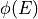
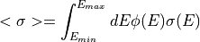
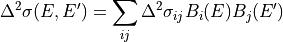
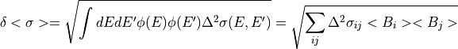

fudge.reactionData package¶
Subpackages¶
Submodules¶
fudge.reactionData.availableEnergy module¶
- class fudge.reactionData.availableEnergy.Component[source]¶
Bases:
Component- moniker = 'availableEnergy'¶
- class fudge.reactionData.availableEnergy.Gridded1d(axes, array, **kwargs)[source]¶
Bases:
BaseAvailableEnergyForm,Gridded1d
- class fudge.reactionData.availableEnergy.XYs1d(**kwargs)[source]¶
Bases:
BaseAvailableEnergyForm,XYs1d- mutableYUnit = False¶
fudge.reactionData.availableMomentum module¶
- class fudge.reactionData.availableMomentum.Component[source]¶
Bases:
Component- moniker = 'availableMomentum'¶
- class fudge.reactionData.availableMomentum.Gridded1d(axes, array, **kwargs)[source]¶
Bases:
BaseAvailableMomentumForm,Gridded1d
- class fudge.reactionData.availableMomentum.XYs1d(**kwargs)[source]¶
Bases:
BaseAvailableMomentumForm,XYs1d- mutableYUnit = False¶
fudge.reactionData.crossSection module¶
- class fudge.reactionData.crossSection.Background(resolvedRegion=None, unresolvedRegion=None, fastRegion=None)[source]¶
Bases:
AncestryIO- ancestryMembers = ('resolvedRegion', 'unresolvedRegion', 'fastRegion')¶
- property domainMax¶
- property domainMin¶
- property domainUnit¶
- property fastRegion¶
- moniker = 'background'¶
- classmethod parseNodeUsingClass(element, xPath, linkData, **kwargs)[source]¶
This method must be overrwritten by the derived class.
- property resolvedRegion¶
- toXML_strList(indent='', **kwargs)[source]¶
This methods must be overwritten by the derived class. It must return a Python list of strings that are the XML representation of self.
- property unresolvedRegion¶
- class fudge.reactionData.crossSection.BackgroundTerm(data)[source]¶
Bases:
AncestryIO,ABC- property XYs1d¶
- property data¶
- fixDomains(energyMin, energyMax, ancestorReference)[source]¶
Calls the fixDomains for the data member.
- abstract property moniker¶
- classmethod parseNodeUsingClass(element, xPath, linkData, **kwargs)[source]¶
This method must be overrwritten by the derived class.
- property regions1d¶
- class fudge.reactionData.crossSection.BaseCrossSectionForm[source]¶
Bases:
Form,ABC- keyName = 'label'¶
- class fudge.reactionData.crossSection.Component[source]¶
Bases:
Component- check(info)[source]¶
Check cross section data for correct threshold, negative cross-sections, etc. Returns a list of any warnings encountered during checking.
- Parameters:
info (dict) – A Python dictionary containing the parameters that control the cross-section checking.
CoulombReaction (boolean) – True if target and projectile are both charged particles, or if two or more products are charged particles.
Q (float) – a parameter of info: if Q is positive (and CoulombReaction=False), cross-section must start at crossSectionEnergyMin, otherwise cross-section threshold must agree with Q-value
kinematicFactor (float) – a parameter of info: equal to (targetMass + projectileMass) / targetMass
dThreshold (string) – a parameter of info: allowable threshold energy mismatch as a string suitable for the PQU class
crossSectionEnergyMin (float) – a parameter of info: non-threshold cross-section must start at this limit (usually 1e-5 eV)
crossSectionEnergyMax (float) – a parameter of info: the cross-section must extend up to limit (usually 20 MeV)
- property domainMax¶
- property domainMin¶
- property domainUnit¶
- effectiveThreshold()[source]¶
Some reactions have a cross section with multiple zero values at their beginning. In such a case, the effective threshold is the point before the first non-zero cross-section value. If an effective threshold cannot be determined, then domainMin is returned.
- evaluateWithUncertainty(E, useCovariance=True, covariance=None, covarianceSuite=None)[source]¶
- Parameters:
E –
useCovariance (bool) – use this to override covarance usage
covariance –
covarianceSuite –
- Returns:
- findEntity(entityName, attribute=None, value=None)[source]¶
Default findEntity method. In general, sub-classes should over-ride this method. This method uses the following algorithm to find entity. Firstly, if ‘attribute’ is None, then self is assumed to have an attribute named entityName which is taken to be the desired entity. Otherwise, self is iterated over until an item with an attribute named attribute with value value is found. In either case, if an entity is found, its moniker value must be entityName. If no entity is found, raise AttributeError.
- getMatchingCovariance(covariance=None, covarianceSuite=None)[source]¶
Retrieve the uncertainty that goes with this cross-section, if we can find it :return:
- heat(style, EMin, lowerlimit=None, upperlimit=None, interpolationAccuracy=0.001, heatAllPoints=False, doNotThin=True, heatBelowThreshold=True, heatAllEDomain=True, setThresholdToZero=False, addToSuite=False)[source]¶
Returns the result of self.toPointwise_withLinearXYs( ).heat( … ). See method crossSection.XYs1d.heat for more information. If setThresholdToZero is True and self’s cross section at the first point is 0., the heated cross-section’s first value will also be 0.
- integrateTwoFunctionsWithUncertainty(f2, domainMin=None, domainMax=None, useCovariance=True, covariance=None, covarianceSuite=None, normalize=False)[source]¶
Computes the spectrum (i.e. weighted) integral of self with the spectrum (i.e. weight) specified by
spectrumoptionally from Emin to Emax. If the covariance is provided, the uncertainty on the spectrum integral will be computed.- Parameters:
f2 (XYs1d instance) – spectrum over which to average
domainMin (PQU or None) – Lower integration limit. If None (the default), then the lower limit of self’s domain is used
domainMax (PQU or None) – Upper integration limit. If None (the default), then the upper limit of self’s domain is used
useCovariance (bool) – use this to override covarance usage
covariance (covariance instance or None) – covariance to use when computing uncertainty on the spectral average. If None (default: None), no uncertainty is computed.
covarianceSuite (CovarianceSuite) – covarianceSuite to use for looking up covariance if necessary
normalize (bool) – if set to True, normalize integral of the spectrum over the interval so we are doing a spectrum average
- Return type:
- How does it work?:
Given a weighting spectrum , we intend to average the cross section in self as follows:

To compute the uncertainty, we resort to the basis function expansion of the covariance as follows:

In the ENDF format, all covariances are assumed to be grouped in energy so the basis functions are simple window functions. With this,

- moniker = 'crossSection'¶
- class fudge.reactionData.crossSection.CoulombPlusNuclearElastic(link=None, root=None, path=None, label=None, relative=False)[source]¶
Bases:
ReferenceSpecial type of link to doubleDifferentialCrossSection/chargedParticleElastic.
- moniker = 'CoulombPlusNuclearElastic'¶
- class fudge.reactionData.crossSection.FastRegion(data)[source]¶
Bases:
BackgroundTerm- moniker = 'fastRegion'¶
- class fudge.reactionData.crossSection.Gridded1d(axes, array, **kwargs)[source]¶
Bases:
BaseCrossSectionForm,Gridded1d
- class fudge.reactionData.crossSection.Reference(link=None, root=None, path=None, label=None, relative=False)[source]¶
Bases:
Link,BaseCrossSectionFormThis cross section form consists of a reference to another cross section.
- property crossSection¶
- property domainMax¶
- property domainMin¶
- property domainUnit¶
- moniker = 'reference'¶
- class fudge.reactionData.crossSection.Regions1d(**kwargs)[source]¶
Bases:
BaseCrossSectionForm,Regions1dThis class stores a cross-section in two or more regions, which may have different interpolations. Each region must contain at least two points. Each pair of adjacent regions must overlap at exactly one point.
- effectiveThreshold()[source]¶
Some reactions have a cross section with multiple zero values at their beginning. In such a case, the effective threshold is the point before the first non-zero cross section value. Otherwise, it is the energy of the first point.
- toPointwise_withLinearXYs(**kwargs)[source]¶
Converts the regions of self into a single
XYs1d.XYs1dinstance that has ‘lin-lin’ interpolation. At the boundary between two abutting regions, the x-values are the same, which is not allowed for anXYs1d.XYs1dinstance.Optional (key-word) arguments: :param accuracy: indicates desired accuracy. Controls how many points are added when switching interpolation :param lowerEps: :param upperEps: These arguments are used to smear the x-values at a boundary as follows. Let
 and
and
 be the abutting points for two abutting regions. If
be the abutting points for two abutting regions. If  then the point is removed.
Otherwise, if( lowerEps > 0 ) the point is moved to
then the point is removed.
Otherwise, if( lowerEps > 0 ) the point is moved to  (or
(or  if
if  ) and the
) and the  value is interpolated at
value is interpolated at  . If is less than the x-value of the point below
and
. If is less than the x-value of the point below
and removeOverAdjustedPointsis True then the point is removed; otherwise, a raise is executed. Similarly
for upperEps and the point .
:param cls: class to return. Defaults to xData.regions.Regions1d
- class fudge.reactionData.crossSection.ResolvedRegion(data)[source]¶
Bases:
BackgroundTerm- moniker = 'resolvedRegion'¶
- class fudge.reactionData.crossSection.ResonanceLink(link=None, root=None, path=None, label=None, relative=False)[source]¶
Bases:
Link- moniker = 'resonances'¶
- class fudge.reactionData.crossSection.ResonancesWithBackground(label, resonances, background, uncertainty=None)[source]¶
Bases:
BaseCrossSectionFormThis class stores cross-sections that include resonances along with a background contribution. Contains a link to the resonances, and the ‘background’ which consists of up to three terms: resolved, unresolved and fast regions. The full XYs1d cross-section can be obtained by first reconstructing resonances and then adding the background contribution (users should use the reactionSuite.reconstructResonances method).
- ancestryMembers = ('resonances', 'background', 'uncertainty')¶
- property background¶
- backgroundAsRegions1d()[source]¶
This methods returns the backgroup cross sections as a Regions1d instance.
- property domainMax¶
- property domainMin¶
- property domainUnit¶
- fixDomains(energyMin, energyMax, domainToFix)[source]¶
Calls the fixDomains for the background member.
- property label¶
- moniker = 'resonancesWithBackground'¶
- classmethod parseNodeUsingClass(element, xPath, linkData, **kwargs)[source]¶
This method must be overrwritten by the derived class.
- property resonances¶
- toXML_strList(indent='', **kwargs)[source]¶
This methods must be overwritten by the derived class. It must return a Python list of strings that are the XML representation of self.
- property uncertainty¶
- class fudge.reactionData.crossSection.ThermalNeutronScatteringLaw1d(link=None, root=None, path=None, label=None, relative=False)[source]¶
Bases:
ReferenceSpecial type of link to doubleDifferentialCrossSection/thermalNeutronScatteringLaw.
- moniker = 'thermalNeutronScatteringLaw1d'¶
- class fudge.reactionData.crossSection.URR_probabilityTables1d(label, URR_probabilityTables)[source]¶
Bases:
BaseCrossSectionForm,XDataFunctional- convertUnits(unitMap)[source]¶
Converts each axis units. unitMap is a dictionary of mapping old units to new units (e.g., { ‘eV’ : ‘MeV’, ‘b’ : ‘mb’ }).
- property data¶
- dimension = 1¶
- moniker = 'URR_probabilityTables1d'¶
- class fudge.reactionData.crossSection.UnresolvedRegion(data)[source]¶
Bases:
BackgroundTerm- moniker = 'unresolvedRegion'¶
- class fudge.reactionData.crossSection.XYs1d(**kwargs)[source]¶
Bases:
BaseCrossSectionForm,XYs1d- effectiveThreshold()[source]¶
Some reactions have a cross section with multiple zero values at their beginning. In such a case, the effective threshold is the point before the first non-zero cross section value. Otherwise, it is the energy of the first point.
- heat(currentTemperature, newTemperature, massRatio, EMin, lowerlimit=None, upperlimit=None, interpolationAccuracy=0.001, heatAllPoints=False, doNotThin=True, heatBelowThreshold=True, heatAllEDomain=True, setThresholdToZero=False)[source]¶
Returns a linear version of the cross-section heated to ‘newTemperature’. If the current temperature of the cross-section, given by ‘currentTemperature’, is greater than ‘newTemperature’ a raise is executed. If lowerlimit is None, it is set to ‘oneOverV’ except when the reaction is determined to be a threshold reaction, then it is set to ‘threshold’. Any cross-section with domainMin greater than 2.5e-4 eV is determined to be a threshold reaction. If upperlimit is None it is set to ‘constant’. If heatBelowThreshold is False, then EMin is set to the larger of EMin and self’s domainMin.
The unit of ‘currentTemperature’ and ‘newTemperature’ must be the same as the self’s domain unit.
For more information on EMin, lowerlimit, upperlimit, interpolationAccuracy, heatAllPoints, doNotThin and heatAllEDomain see the module crossSectionAdjustForHeatedTarget.
- mutableYUnit = False¶
- toPointwise_withLinearXYs(**kwargs)[source]¶
Returns a new instance, converted to lin-lin interpolation with added points to maintain desired accuracy.
Optional (key-word) arguments: :param accuracy: desired accuracy. Controls how many points are added when switching interpolation :param lowerEps: has no effect, kept for compatibility with Regions1d.toPointwise_withLinearXYs :param upperEps: has no effect, kept for compatibility with Regions1d.toPointwise_withLinearXYs :param cls: class to return. Defaults to xData.XYs1d.XYs1d :return:
- class fudge.reactionData.crossSection.Ys1d(**kwargs)[source]¶
Bases:
BaseCrossSectionForm,Ys1d